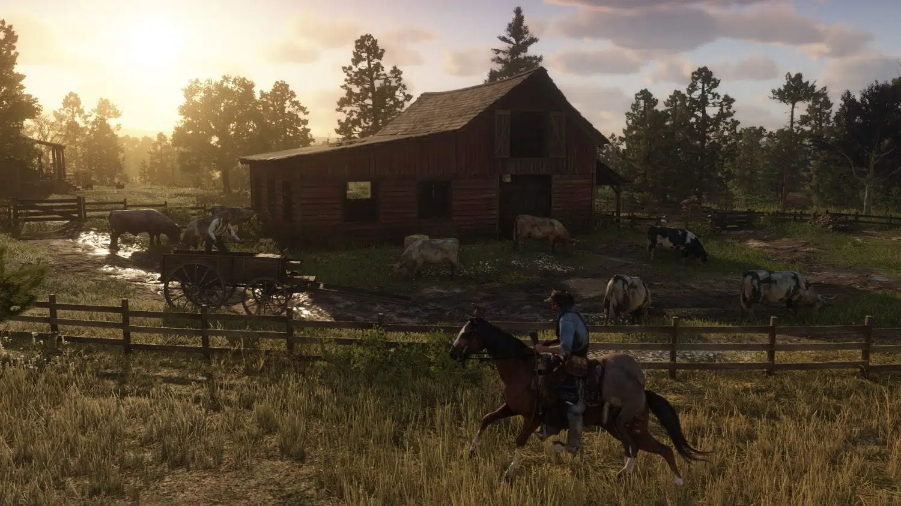
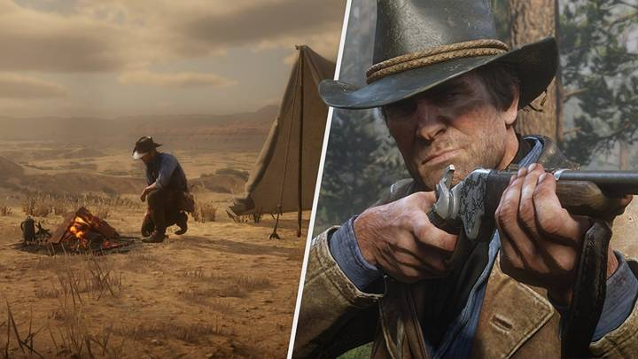
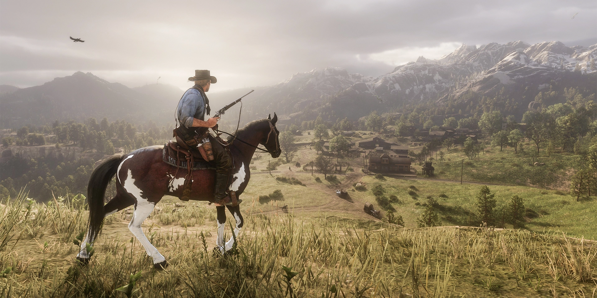

Red Dead Redemption 2 é um jogo de ação e aventura ambientado no final do século XIX, no auge da era dos foras da lei no oeste americano. Desenvolvido pela Rockstar Games, o mesmo estúdio responsável pela aclamada série Grand Theft Auto, o jogo é uma sequência do primeiro Red Dead Redemption, lançado em 2010, mas se passa antes dos eventos do título anterior. O protagonista é Arthur Morgan, um membro da gangue Van der Linde, liderada pelo carismático Dutch, que precisa sobreviver à perseguição das autoridades e dos caçadores de recompensa, enquanto busca um lugar para recomeçar a vida.
Um mundo vivo e imersivo
Uma das principais qualidades de Red Dead Redemption 2 é a sua incrível capacidade de criar um mundo aberto vivo e imersivo, que oferece inúmeras possibilidades de exploração e interação. O jogo possui um mapa gigantesco, que abrange diversos cenários, como montanhas nevadas, pântanos infestados de jacarés, florestas densas, planícies abertas, fazendas rústicas e cidades em desenvolvimento. Cada região tem suas próprias características, fauna, flora, clima e habitantes, que reagem de forma diferente ao jogador.
O nível de detalhe do jogo é impressionante, desde os gráficos realistas e as animações fluidas, até os sons e as trilhas sonoras que acompanham cada momento da aventura. O jogo também se destaca pela sua física apurada e pela sua inteligência artificial, que tornam as situações mais críveis e dinâmicas. Por exemplo, os cavalos são animais essenciais para o transporte e a caça, mas também têm personalidade e necessidades próprias, que exigem cuidado e atenção do jogador. Os inimigos e os aliados também têm comportamentos variados e adaptativos, que dependem do contexto e das escolhas do jogador.
Uma história envolvente e emocionante
Outro aspecto que faz de Red Dead Redemption 2 um jogo excepcional é a sua história envolvente e emocionante, que mistura ação, drama, humor e romance. O jogo conta com um roteiro bem escrito e bem dirigido, que apresenta personagens carismáticos e complexos, que evoluem ao longo da trama. O protagonista Arthur Morgan é um fora da lei leal e habilidoso, mas também um homem atormentado por seus conflitos internos e pelas consequências de suas ações.
O líder Dutch é um visionário idealista e carismático, mas também um homem ambicioso e manipulador. A gangue Van der Linde é formada por diversos membros com personalidades distintas e interessantes, que interagem entre si de forma orgânica e divertida. O jogo também explora temas relevantes para a época retratada, como a industrialização, a modernização, o racismo, o sexismo, o capitalismo e o imperialismo. O jogo mostra como esses fatores afetam a vida dos personagens e da sociedade em geral, criando conflitos morais e éticos.
O jogo também faz referências históricas e culturais ao Velho Oeste americano, como os índios nativos, os imigrantes europeus, os bandidos lendários, os xerifes corruptos, os pistoleiros famosos e os duelos ao pôr do sol.
Uma jogabilidade variada e divertida
Por fim, Red Dead Redemption 2 também se destaca pela sua jogabilidade variada e divertida, que oferece diversas atividades e missões para o jogador realizar. O jogo possui um sistema de progressão que permite ao jogador melhorar suas habilidades, armas, roupas e equipamentos ao longo do jogo.
O jogo também possui um sistema de honra que mede as ações do jogador como boas ou más, afetando a forma como os personagens reagem a ele. Além disso, o jogo possui um sistema de escolha que permite ao jogador decidir como resolver as situações que encontra pelo caminho. O jogo possui missões principais que avançam a história principal do jogo, mas também missões secundárias que exploram as histórias paralelas dos personagens e do mundo.
O jogo possui atividades opcionais que enriquecem a experiência do jogador, como caçar, pescar, jogar cartas, beber no saloon, participar de eventos aleatórios, explorar locais secretos, coletar itens raros e muito mais. O jogo também possui um modo online que permite ao jogador criar seu próprio personagem e se aventurar com outros jogadores em um mundo compartilhado.
Conclusão
Red Dead Redemption 2 é um jogo que merece todos os elogios que recebeu da crítica e do público. O jogo é uma obra-prima do Velho Oeste, que combina um mundo vivo e imersivo, uma história envolvente e emocionante e uma jogabilidade variada e divertida. O jogo é um exemplo de como os videogames podem ser uma forma de arte e de entretenimento, capaz de criar experiências únicas e memoráveis. Red Dead Redemption 2 é um jogo que todo fã de video games jogar.